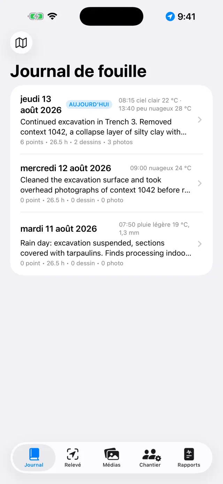
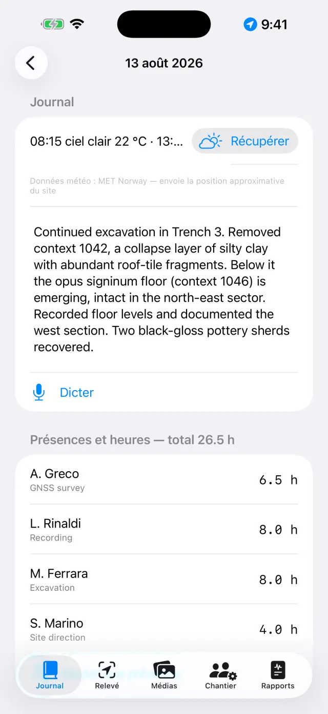
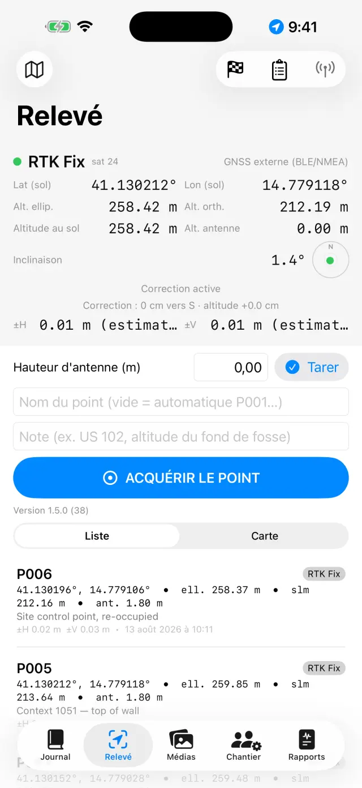
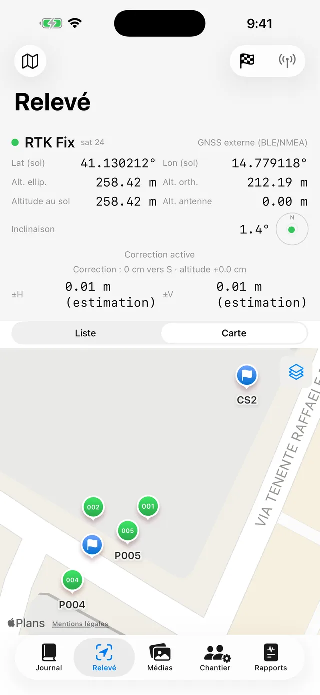
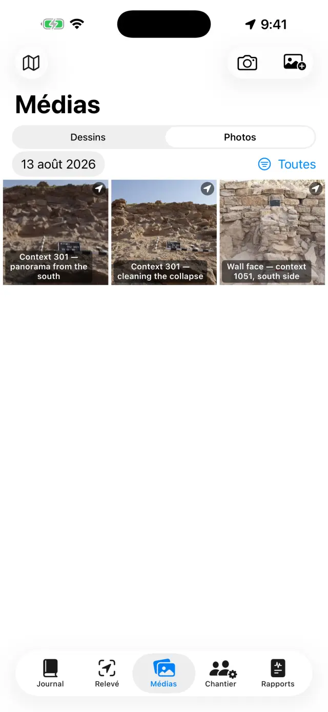
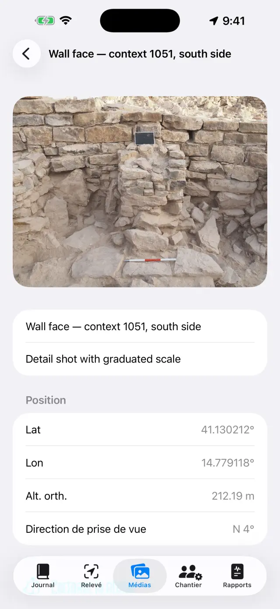
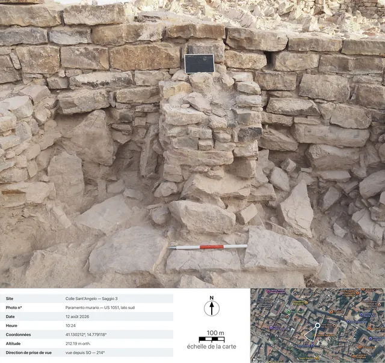
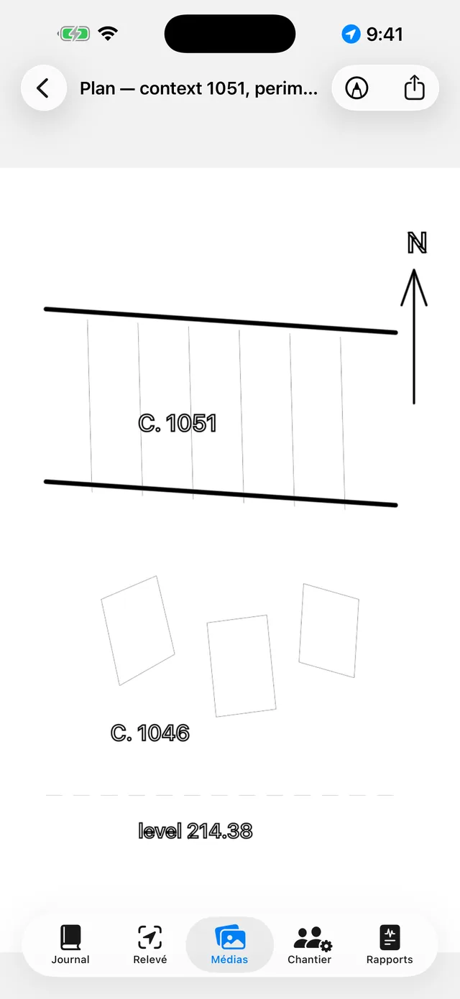
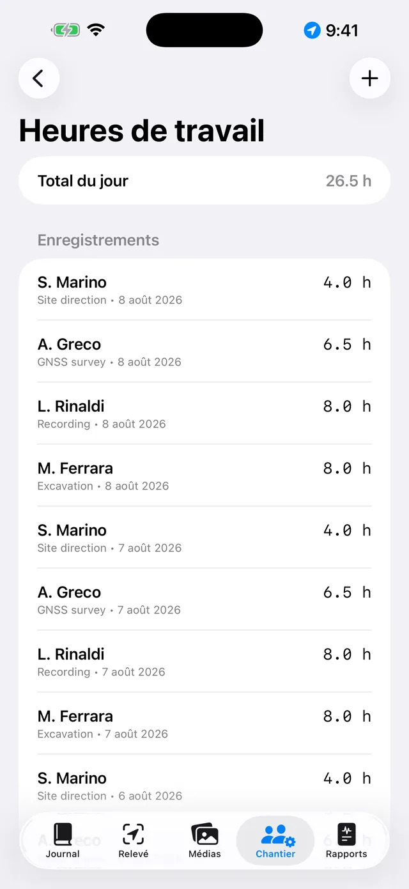
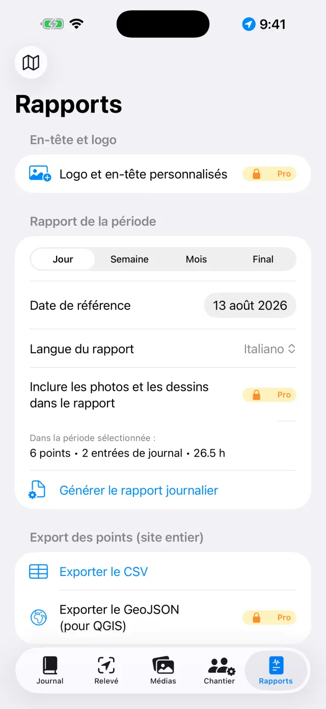

Le journal de fouille numérique pour iPhone et iPad. 100 % hors ligne : vos données restent sur votre appareil.
📱 Android : télécharger l'app (APK, gratuite). La première fois, Android demande d'autoriser l'installation depuis Chrome ou Fichiers ; ensuite l'app propose elle-même les mises à jour.
❤️ Soutenir le projet — Giornale di Scavo est gratuite, sans publicité et sans abonnement, et je la développe sur mon temps libre. Si elle vous est utile sur le chantier, vous pouvez soutenir son développement par un don.
Une seule idée gouverne tout : chaque journée de fouille est une
page qui se remplit toute seule. Vous enregistrez les choses là où elles se
produisent — un point GNSS dans le Relevé, une photo dans les Médias, les heures
dans le Chantier — et la page du jour dans le Journal les rassemble
toutes automatiquement. En fin de semaine ou en fin de chantier, les rapports se
génèrent tout seuls à partir des pages.
Une journée type
MatinOuvrez la page du jour, notez la météo et le journal (ou dites-le avec Dicter)
ÉquipeDans le Chantier, enregistrez qui est présent et ses heures
RelevéAcquérez les points GNSS ; vérifiez un repère au préalable si vous utilisez le RTK
PhotosPhotographiez depuis les Médias : les coordonnées s'attachent automatiquement
DessinsDécalquez la coupe ou le plan sur une photo (calque numérique)
USMettez à jour les fiches des US fouillées et leurs relations : US
MobilierLes caisses devant vous, enregistrez ce qui est sorti : Chantier → Mobilier
SoirDepuis l'onglet Rapports, générez le rapport journalier : un PDF prêt à envoyer
Premiers pas
Au premier lancement, vous trouverez déjà un site d'exemple. Pour en créer
un à vous, touchez le nom du site en haut (icône 🗺) →
Nouveau site… et donnez-lui un nom (p. ex. « Colle Sant'Angelo — Sondage 3 »).
Le nom du site actif est toujours visible en haut : tous les onglets
affichent les données de ce site. Pour changer de site, touchez à nouveau le
nom : la liste se trouve sous le titre « Vos sites », et avec
Renommer le site… vous corrigez un nom sans rien perdre.
Accordez les permissions lorsqu'elles sont demandées : position
(pour les points), appareil photo (pour les photos), microphone
(pour la dictée), Bluetooth (seulement si vous utilisez un récepteur externe).
Les six onglets
📓 Journal
Touchez une journée pour ouvrir sa page : journal, météo, équipe, points,
photos et dessins du jour y sont déjà.
Écrivez le journal ou touchez Dicter et parlez : la transcription
se fait sur l'appareil et fonctionne même sans réseau.
La météo s'écrit à la main (p. ex. « Ensoleillé, 28 °C, vent léger ») ou se
récupère avec Récupérer, qui demande les conditions du moment au
service météorologique norvégien. Cela nécessite le réseau et ne vaut que pour
la journée d'aujourd'hui : la météo d'hier n'est plus récupérable. Un second
appui dans l'après-midi ajoute une nouvelle mesure. Ce que vous écrivez à la
main l'emporte toujours.
Lors de la récupération, seule la position de la zone arrondie à environ
11 mètres quitte l'appareil, et dans les rapports la ligne apparaît dans la
langue du rapport.

La liste des journées

La page d'une journée
🧱 US — fiches stratigraphiques
Une fiche pour chaque unité stratigraphique, avec les relations entre les US
enregistrées comme des liens : c'est de là que sortent les fiches US de la
documentation et le diagramme de Harris.
Dans l'onglet US, touchez + : l'application propose
le numéro suivant (vous pouvez le changer) et demande le type et la définition.
Le numéro est unique dans le site ; plus tard, vous le changez avec
Changer, et les caisses de cette provenance le suivent.
La fiche rassemble l'identification (type, sous-type, définition, zone ou
secteur, carré, tranchée, méthode de fouille : manuelle, mécanique ou
Non fouillée pour les US documentées mais non fouillées), les
dimensions et les altitudes (longueur, largeur, épaisseur, altitude minimale et
maximale), la description (couleur, Munsell, type de sédiment, consistance,
composants, structure du dépôt, et trois questions oui/non :
Scellée, Altération de surface,
Bioturbation), le mobilier présent, l'interprétation (activité,
phase, datation, éléments datants), les dates d'ouverture et de fermeture et le
responsable. Elle s'enregistre toute seule pendant que vous écrivez. Tout en bas
se trouvent aussi les photos et les points de relevé qui nomment l'US dans leur
titre, leur nom ou leur note (« US 102 depuis le nord »).
À côté de la définition, de la couleur, du type de sédiment, de la
consistance, des composants, du mobilier présent, de l'interprétation, de
l'activité et de la datation se trouve le bouton du thésaurus
(le petit livre) : choisissez dans le lexique standard ou parmi vos propres
termes, et la fiche reste homogène entre tous ceux qui fouillent. Pour les
composants et le mobilier, on peut en choisir plusieurs. Si le mot que vous
cherchez n'y est pas, la feuille propose de l'ajouter. Vos termes valent pour
tous les sites et se gèrent depuis Thésaurus, dans le menu ⋯ de
l'onglet US. C'est là aussi que vous choisissez la
Chronologie du site : Méditerranéenne ou
Golfe Arabique (DCT), avec les périodes de la fiche DCT (Hafit, Umm
an-Nar, Wadi Suq…) proposées pour la datation.
Ajouter une relation : choisissez la relation (recouvre, coupe,
comble, s'appuie contre, liée à, égale à, et leurs inverses) et saisissez le
numéro de l'autre US. La relation n'est enregistrée qu'une fois et apparaît
inversée dans l'autre fiche : si la 101 recouvre la 102, dans la 102 vous lisez
« recouverte par 101 ». Si l'autre US n'a pas encore de fiche, une fiche vide est
créée. Une relation qui contredit la séquence déjà enregistrée est refusée, avec
l'explication.
La section du mobilier montre les caisses dont la provenance nomme l'US
(« US 102 », « USM 12 ») : il n'y a rien à relier à la main.
Ajouter du mobilier ouvre la fiche du lot avec la provenance déjà
écrite.
Depuis le menu ⋯, Matrice de Harris dessine la séquence à partir
des relations : l'US la plus récente en haut, les US égales ou liées dans un
seul cadre, les creusements en pointillés, les maçonneries sur fond gris. On
l'agrandit avec deux doigts et on la partage comme image.
Fiche imprimée : dans une fiche, le bouton de partage en
haut propose Fiche en PDF et Fiche en DOCX (Word) ; depuis
le menu ⋯ de la liste, Toutes les fiches en PDF et
Toutes les fiches en DOCX (Word) mettent toutes les US du site dans
un seul fichier, une par page. C'est le formulaire d'archive : tableaux avec les
champs, relations, mobilier, logos et en-tête du rapport, dans la langue choisie
pour les rapports.
Survey123 / DCT :
Exporter le CSV (fiche US du DCT) écrit un CSV avec les mêmes
colonnes et les mêmes codes que le formulaire Survey123 de la fiche DCT, prêt à
remettre ou à téléverser. Importer le CSV (fiche US du DCT)… fait
l'inverse : il lit un CSV exporté depuis Survey123 (ou depuis l'application) et
crée les fiches avec leurs relations. Les US qui ont déjà une fiche dans le site
restent telles quelles, et à la fin l'application indique combien de fiches et
de relations elle a ajoutées. Si le fichier contient les périodes du Golfe, la
chronologie du site passe à Golfe Arabique (DCT).
📍 Relevé
Le panneau en haut affiche la position en direct : coordonnées, altitudes,
précision et type de fix (GPS / RTK Float / RTK Fix).
Si vous utilisez une canne, réglez la Hauteur d'antenne (m) :
l'altitude du point est ramenée au sol automatiquement.
Touchez Acquérir le point. Le nom est progressif (P001, P002…),
mais vous pouvez en saisir un à vous (p. ex. « US 102 — fond de fosse ») et
ajouter une note.
Passez de Liste à Carte pour voir les points sur
place ; depuis la carte, vous pouvez activer le cadastre ou un autre service WMS.
Les repères (🏁) vivent dans leur propre section : importez-les depuis un
CSV ou créez-les, puis ouvrez la Vérification en temps réel et
surveillez les écarts ΔN/ΔE/ΔZ, la pointe sur le clou, avant de commencer à
lever.
Sous Carnets de nivellement se trouve le carnet de terrain du
niveau optique : stations, lectures arrière et avant, altitudes calculées à
partir d'un repère de départ, avec le contrôle de fermeture. Les points nivelés
entrent dans le site avec leur altitude, comme les points GNSS.
Sur les appareils dotés d'un scanner LiDAR (iPhone Pro à
partir du 12, iPad Pro) apparaît Mesure 3D : cadrez lentement jusqu'à ce que la surface se
reconstruise, puis touchez les deux points à mesurer et lisez la distance, la
distance horizontale et le dénivelé. Avec Ancrer à un repère vous
choisissez un repère d'altitude connue et vous touchez son point au sol : à
partir de là, chaque mesure porte aussi l'altitude orthométrique des deux
extrémités. Fixer garde la mesure dans la scène,
Rejeter la mesure la jette, Reporter dans le journal en
fait un texte que vous corrigez avant de confirmer. C'est une mesure optique,
et l'application le déclare en écrivant « LiDAR ±cm » : cela sert pour un
dénivelé ou une longueur prise à la volée sur place, et cela ne remplace ni le
GNSS ni le niveau. Sur les appareils sans scanner, le bouton n'existe pas du
tout.
Sous le panneau se trouvent les Enregistrements NMEA : le flux
brut du récepteur externe part tout seul dans un
fichier — l'enregistrement démarre quand vous allumez l'antenne et se ferme
quand vous l'éteignez, sans que vous ayez à y penser. Cela sert à relire une
journée douteuse ou à remettre le brut à qui fait le post-traitement. Les
fichiers se partagent et se suppriment, sauf celui de l'enregistrement en
cours ; la liste s'ouvre aussi récepteur éteint, ainsi les fichiers d'hier
restent accessibles.

Le panneau GNSS du Relevé

Points et repères sur la carte
Chaque point enregistre les deux altitudes :
ellipsoïdale et orthométrique (alt. orth.). Avec le GPS interne du téléphone,
l'altitude orthométrique peut ne pas être disponible : il faut alors un
récepteur externe (voir plus bas).
📷 Médias
Photographiez avec le bouton appareil photo ou importez depuis la pellicule.
Les photos prennent un nom progressif (F001, F002…) et sont géoréférencées
avec la dernière position GNSS disponible.
Lors de la prise de vue, l'application enregistre aussi la direction
de prise de vue donnée par la boussole : dans le détail de la photo
et dans les rapports, vous lisez « vue depuis SO — 214° », et pour les
prises de vue à plomb (plan, fond d'une US), la mention zénithale avec la
direction du bord haut. Si la boussole est perturbée, l'application le
signale.
Touchez une photo pour son titre et ses notes (p. ex. « US 102 depuis le nord »).
Partager la fiche génère la
fiche photographique de documentation : la photo avec, en
dessous, les données de prise de vue (site, numéro, date et heure,
coordonnées, altitude, direction), une vue satellite avec l'épingle de
position et le cône de prise de vue, la barre d'échelle de la carte et la
flèche du nord. La carte nécessite le réseau : sans réseau, la fiche est
quand même générée, avec le panneau de données agrandi.
Échelle virtuelle pose sur la photo les repères métriques que
vous n'aviez pas sur le terrain. D'abord Calibrer la photo : vous
touchez les deux extrémités d'une distance connue — une graduation de la règle,
le côté d'une brique — et vous la déclarez en centimètres. Ensuite vous posez ce
qu'il faut : Réglette graduée 5 cm, Réglette graduée 10 cm
ou Réglette graduée 20 cm, Jalon 50 cm,
Jalon 1 m ou Jalon 2 m, Carré 10×10 cm,
Croix de référence et Flèche du nord. Chaque élément a son
rendu (Barre plate, Jalon réel, Règle graduée),
sa taille, son épaisseur et sa rotation ; pour en déplacer un,
maintenez-le appuyé et faites-le glisser — ainsi le pincement
du zoom ne le déplace pas par erreur.
Ajouter une mesure mesure n'importe quelle distance sur la photo
en deux touches. Le nombre n'est jamais enregistré : si vous recalibrez, toutes
les étiquettes se réécrivent toutes seules. Sur les photos prises à plomb avec
l'application, la flèche du nord naît déjà orientée sur l'azimut enregistré, et
le rapport le déclare ; si c'est vous qui la tournez, la mention devient
« déclarée ». Partager avec l'échelle sort une copie de la photo avec
dessus ce que vous avez posé — Partager la photo reste l'original nu,
avec son EXIF.
Traiter en série (menu en haut dans
les Médias) prend un groupe de photos de la photothèque et les passe
toutes au compter et mesurer, l'une après l'autre : chaque photo devient une
photo du site à la date de la prise de vue, et chacune aura sa nouvelle
fiche de mobilier à confirmer. L'écran reste allumé pendant toute la
série. Si vous sortez ou si vous l'interrompez, les photos déjà prêtes restent
en brouillon et Reprendre la série repart de là où elle en était. À
la fin, la révision vous passe les fiches une par une : vous corrigez la
provenance, la catégorie et la quantité, puis vous confirmez.

La galerie photo

Le détail d'une photo : coordonnées, altitude et direction de prise de vue

La fiche exportée : les données de prise de vue, la vue satellite avec le cône de prise de vue, la barre d'échelle de la carte et la flèche du nord
🧮 Compter et mesurer (dans les Médias)
Le plateau de fragments photographié d'en haut, et l'application qui les
compte et les mesure toute seule. La fonction vit sur la photo d'un lot
de mobilier : vous l'ouvrez depuis sa fiche et vous touchez
Compter et mesurer.
L'échelle d'abord. L'application cherche toute seule la réglette
graduée sur la photo : si elle la trouve, elle vous dit combien de
cases elle a lues, vous déclarez ce que mesure une case (1, 2, 5 ou 10 cm) et
vous touchez Utiliser la proposition. Si elle ne la trouve pas, vous
touchez à la main les deux extrémités d'une distance connue. Vous pouvez aussi
choisir Ne pas calibrer : alors on compte seulement, et l'application
écrit que les mesures ne sont pas là — elle ne les invente pas.
Le modèle détoure toutes les formes de la photo : cela peut prendre quelques
dizaines de secondes. Ce qui apparaît est une proposition, pas
un résultat : une touche exclut une forme, une autre la reprend.
Fusionner réunit en une seule les formes qui sont la même pièce
cassée en deux ; Limiter à une zone vous fait dessiner du doigt
l'enclos du plateau, et la recherche reste là-dedans ; Passe fine
repasse seulement là où elle n'avait rien trouvé. Les suspects
— les formes qui ressemblent au fond, à la bâche, à l'ombre — se regroupent et
s'excluent d'un seul coup.
Avec Matériau de la forme vous touchez une pièce et vous dites ce
que c'est ; Matériau pour toutes le donne à toutes ensemble, ou
seulement à celles qui en sont restées dépourvues.
Proposer le matériau demande au modèle embarqué de le deviner :
c'est une proposition à vérifier, et votre choix l'emporte toujours.
Suivant ouvre la feuille de confirmation avec le texte déjà
écrit : le comptage, les mesures (grand côté × petit côté, dans cet ordre) et
les déclarations honnêtes — « dont N n'ont pas de mesure fiable » quand une
forme ne se laisse pas mesurer. S'il y a une étiquette sur la
photo, l'application essaie de la lire et vous le dit toujours : soit
« Étiquette lue : … », soit « Aucun texte lisible sur la photo ».
Les interrupteurs n'apparaissent que là où il y a une place vide à remplir :
Utiliser le nombre comme quantité, Utiliser comme sigle,
Utiliser comme provenance. Ce que vous avez déjà écrit n'est jamais
écrasé, et les notes s'allongent : un second tour se met à la
suite du premier, pas à sa place. Le texte est modifiable : ce qui entre dans
les notes, c'est ce que vous lisez là.
Ensuite, dans le détail de la photo, Numéros sur les formes
affiche ou masque les petits numéros — et tels que vous les voyez là, ils
sortent aussi dans les partages et dans les rapports. Touchez une forme pour
savoir qui elle est : « 7: 4,2×2,8 cm ». Si la photo n'est pas calibrée,
l'étiquette le dit, au lieu de donner un nombre.
La mesure vaut dans le plan des deux points que
vous avez calibrés : la photo doit être prise à plomb, le plateau parallèle au
capteur. La référence déclarée est de ±2 mm sur les pièces bien cadrées ; un
fragment debout ou au bord de la photo est hors de ce pacte.
✏️ Dessins (dans les Médias)
Créez une nouvelle planche et choisissez une photo du site comme fond :
c'est votre calque numérique. Un dessin peut se poursuivre sur plusieurs
journées. On peut aussi ne pas la mettre, la photo : sur le calque blanc, on
dessine tout aussi bien.
Décalquez les couches, les coupes et les pierres du doigt ou avec l'Apple
Pencil. Pincez pour zoomer (jusqu'à 6×, double-tapez à deux
doigts pour revenir à 1×). Si la photo vous cache le tracé, choisissez
Opacité du fond… dans le menu de l'appareil photo et amenez-la où il
faut, de 5% à 100% : cela estompe la photo, pas le dessin. Le choix reste sur
la planche et vaut aussi en PDF, DOCX, PNG et dans Exporter avec légende.
Tout le reste se trouve sous Outils (la clé plate dans la
barre), qui est l'index des sept modes : Zone de texte,
Décalque, Échelle de la photo, Point avec altitude, Trame, Style de trait et Échelle virtuelle. On n'en tient qu'un
seul à la fois : la coche dit
lequel, et tant qu'il est actif le doigt ne dessine pas mais commande cet outil
— pour revenir à dessiner, touchez de nouveau la ligne cochée. Les trois
entrées qui travaillent sur l'image (décalque, échelle, point avec altitude)
n'apparaissent que si une photo de fond est là.
Avec Zone de texte, placez les étiquettes (p. ex. « US 1002 ») :
elles se déplacent, se redimensionnent avec le pincement, et il y a quatre
polices au choix.
Le Décalque reconnaît le contour de
l'objet que vous touchez (une pierre, la limite d'une couche) et le transforme
en trait : la couleur, l'épaisseur et le style de la ligne se changent sans
sortir du mode, et les contours sortent lisses au lieu d'être en escalier. Tout
se passe sur l'appareil, sans réseau.
Dans le décalque, Tout décalquer
fait le tour de toute la photo tout seul. Dans la feuille de départ, vous
décidez l'habillage — Contours seuls, ou une trame et peut-être un
Voile de couleur — et vous appuyez sur Démarrer : la
barre dit où il en est, et il faut quelques dizaines de secondes. Ce qui
apparaît est un aperçu, pas le dessin : une touche à
l'intérieur d'une forme l'exclut, une autre la reprend (entre formes
superposées, la plus petite sous le doigt l'emporte), Passe fine
repasse seulement là où il n'avait rien trouvé, et Appliquer pose
sur le dessin ce qui est resté. Tant que vous n'appliquez pas, la planche n'est
pas touchée.
Avec l'outil Échelle de la photo (règle), touchez les deux
extrémités d'une mesure connue — un segment du jalon — et indiquez la distance
réelle : la photo acquiert l'échelle, et à partir de là les exportations
parlent en mètres.
Avec Point avec altitude, placez sur la photo la croix d'un
point GNSS du site (ou un point saisi à la main) : le nom, l'altitude et les
coordonnées apparaissent dans une étiquette déplaçable avec son trait de
rappel. Pincez sur l'étiquette sélectionnée pour la réduire ou l'agrandir,
quand les valeurs recouvrent le dessin.
La Trame remplit les formes : vous touchez
à l'intérieur d'une forme fermée et elle se remplit. Il y a
les dix trames de convention — Maçonnerie / pierre,
Brique, Mortier / enduit, Argile,
Limon, Sable, Gravier, Charbon / cendre, Roche en place, Bois — et le Voile de couleur (une couleur avec son opacité), seuls ou ensemble. Si une forme
est dans une autre, la plus petite sous le doigt l'emporte ;
Supprimer le remplissage la nettoie. Pas besoin de photo : le
remplissage travaille sur les formes dessinées, donc il marche aussi sur le
calque blanc.
Le Style de trait habille une ligne déjà
dessinée : vous la touchez et choisissez entre Continu,
Tiretée, Pointillée et Trait-point, en
réglant l'épaisseur. Dessiner avec ce style fait naître déjà
habillés les traits suivants ; Retirer le style ramène la ligne
pleine. Ce n'est pas un effet d'écran : les tirets sont de vrais segments, et
ils le restent en PDF, DOCX, PNG, SVG et DXF.
L'Échelle virtuelle apporte sur la planche les mêmes repères
métriques que sur les photos : réglette, jalon, carré, croix, flèche du nord et
mesures à deux touches. Les types métriques demandent que la planche ait une
échelle, c'est-à-dire l'Échelle de la photo : sans une distance
connue, l'application explique au lieu de dessiner. En SVG et en DXF, ces éléments sortent en vecteurs,
sur leur propre calque, et la mesure lue à la règle du SIG coïncide avec
l'étiquette.
Exporter avec légende :
l'image sort avec une bande blanche en bas — barre métrique (si l'échelle est
définie), flèche du nord pour les photos prises à plomb, « vue depuis » pour
les frontales.
Exporter en vectoriel : SVG
pour le dessin, ou DXF pour le SIG. Avec au moins deux
points cotés avec coordonnées sur une photo à plomb, le DXF sort
géoréférencé en UTM et se positionne tout seul dans le monde
sous QGIS ; avec la seule échelle, il sort en mètres locaux ; sans l'un ni
l'autre, l'application le signale et ne produit pas de fichier sans
unité. Le SVG fait exception sur l'opacité : il incorpore la photo d'origine
telle quelle, donc le fond estompé y sort à pleine force.
Une fois terminé, masquez la photo : le dessin propre reste, prêt pour le rapport.

Le calque numérique
👷 Chantier
Enregistrez les présences du jour : nom, fonction et heures de chacun.
Tenez l'inventaire des équipements et à qui ils sont attribués.
Sous Mobilier se trouve le registre de ce qui sort de la fouille,
avec le nombre de lignes déjà enregistrées écrit sous le nom.

Présences et heures
📦 Mobilier (dans le Chantier)
Le vrai moment n'est pas celui de l'appareil photo : c'est celui où l'on
s'assoit en fin de journée, les caisses devant soi, et où on les dépouille l'une
après l'autre, fatigué et les mains sales. Tout ici est fait pour ce moment-là.
Chantier → Mobilier → +. La fiche s'ouvre
déjà avec la date du jour et avec la dernière provenance
utilisée : dès la deuxième ligne, enregistrer se réduit presque à
toucher. Le champ propose les provenances déjà utilisées sur ce site.
Les champs sont dans l'ordre où on les remplit vraiment :
Provenance (p. ex. « US 102 »), Catégorie,
Quantité avec son Unité (fragments, pièces, sachets,
caisses, grammes), le sigle de la caisse ou du sachet, État
(À laver, Lavé, Marqué, Remis),
les notes et la date.
Les catégories proposées sont au nombre de onze — Céramique,
Brique, Ossements animaux, Ossements humains,
Métal, Verre, Industrie lithique,
Mortier et enduit, Bois, Échantillons,
Autre — mais vous pouvez en écrire une à vous (« Enduit peint ») :
ce sera ce mot-là dans toutes les langues, car l'application ne traduit que les
entrées qu'elle propose elle-même.
La quantité peut rester vide : une ligne peut dire « il y avait ça » sans le
compter, et dans les exportations cette cellule reste vide, jamais à zéro.
Les photos de la fiche se prennent avec Prendre une photo, se
récupèrent avec Depuis la photothèque ou avec Du site, qui
pêche parmi les photos déjà dans la galerie qui n'ont pas encore de fiche. Ce
sont les mêmes photos que dans les Médias : supprimer un lot de
mobilier ne supprime pas ses photos, qui perdent seulement le
lien.
Dans la page de la journée, la section Mobilier n'apparaît que si
vous en avez enregistré ce jour-là. Reporter dans le journal propose
la ligne de synthèse, groupée par provenance et avec les notes en entier : vous
la corrigez et vous l'ajoutez à la fin du journal. Appuyé deux fois, il écrit
deux fois — le journal ne se réécrit jamais tout seul.
📄 Rapports
Choisissez le type : journalier,
hebdomadaire, mensuel ou final
avec annexes complètes.
Choisissez la langue du rapport parmi dix-sept,
indépendante de la langue de l'application : le rapport peut sortir en
italien même si vous utilisez l'application en français.
Générez le PDF, ou exportez en DOCX avec logos et photos, CSV des points, GeoJSON pour QGIS.
Dans En-tête et logos, écrivez l'en-tête et choisissez un ou
plusieurs logos (Choisir le logo de la société, puis
Ajouter un autre logo) : ils apparaissent en tête de tous les
rapports et des fiches US, dans l'ordre de la liste, que vous changez avec les
flèches Déplacer avant.
Tout en bas se trouve Export du mobilier (site entier):
Exporter le CSV du mobilier pour le tableur, et
Exporter le HTML du mobilier pour un tableau avec les vignettes qui
s'ouvre dans n'importe quel navigateur, sans réseau. Les en-têtes, les catégories, les unités et les
états sortent dans la langue choisie pour le rapport ; ce que vous avez écrit
vous-même reste tel que vous l'avez écrit. Dans le rapport de fin de chantier,
le mobilier a son annexe, par provenance.
Les US entrent dans les rapports : celles ouvertes et fermées dans la
période dans le journalier, l'hebdomadaire et le mensuel ; dans le rapport final
se trouve l'annexe avec toutes les fiches, le diagramme de Harris et un tableau
récapitulatif des US (numéro, type, définition, datation, recouvre, recouverte
par).
Avec les photos activées dans les rapports, vous pouvez choisir
Fiches photographiques à la place des photos : chaque photo entre dans le PDF et le DOCX
comme une fiche de documentation complète avec données et carte, dans la
langue du rapport.

Génération des rapports
Récepteur GNSS externe et NTRIP
Avec un récepteur externe (antenne centimétrique), l'application atteint la
précision RTK. Le GPS interne reste toujours disponible en solution de repli.
Allumez le récepteur et activez le Bluetooth du téléphone.
Dans le Relevé, choisissez la source de position : GNSS
externe (BLE/NMEA) et sélectionnez votre
récepteur dans la liste. Les récepteurs MFi et ceux qui diffusent le
NMEA sur le réseau sont aussi pris en charge.
Pour les corrections RTK, configurez le NTRIP : adresse du
caster, port, mountpoint, utilisateur et mot de passe (conservés dans le
trousseau de l'appareil). L'application envoie votre position au caster et
reçoit les corrections.
Attendez le passage en RTK Fix : précision centimétrique.
Vérifiez sur un repère avant de commencer.
Là où le téléphone ne capte pas, il existe aussi la voie
sans internet : une base plantée sur un point connu et un
rover qui s'échangent les corrections par radio LoRa, sans
caster et sans SIM (kit RTK DFRobot avec pont ESP32). Pour l'application, rien
ne change — elle reçoit du récepteur un NMEA déjà corrigé — et le montage du
pont est documenté à part, dans son propre README : ceci reste un guide de
l'application, pas un manuel de firmware.
Sauvegarde et échange
Depuis le menu du site, touchez Exporter le site (.zip) : tout
s'y trouve — journal, points, photos, dessins, heures, repères, mobilier et fiches US.
Conservez le ZIP où vous voulez (Fichiers, Drive, e-mail…). C'est votre
sauvegarde : l'application n'a pas de cloud, par choix.
Importer le site (.zip)… recrée le site sur un autre appareil,
même entre iPhone et Android. L'importation n'écrase jamais et ne fusionne
pas : elle crée toujours un nouveau site à côté des vôtres, avec « (importé) »
dans le nom si vous en avez déjà un du même nom.
⚠️ Supprimer le site… efface le site avec tout son
contenu et c'est irréversible : exportez d'abord un ZIP en cas de doute.
Gratuite
Giornale di Scavo est gratuite et complète : toutes les
fonctions décrites dans ce guide sont incluses, sans abonnement, sans achats
intégrés et sans filigrane, avec des sites illimités.
Résolution des problèmes
Le récepteur Bluetooth n'apparaît pas ou ne se connecte pas
Vérifiez, dans l'ordre :
le récepteur est allumé et n'est pas déjà connecté à une autre application ou à un autre téléphone ;
le Bluetooth du système est activé et l'application a la permission
Bluetooth (Réglages → Giornale di Scavo) ;
la source choisie dans le Relevé est GNSS externe (BLE/NMEA) ;
éteignez et rallumez le récepteur, puis relancez la recherche.
Je n'arrive jamais au RTK Fix
Une connexion NTRIP active est nécessaire : vérifiez le caster, le mountpoint et les identifiants.
Vérifiez la couverture data du téléphone : les corrections voyagent par internet.
Le ciel dégagé compte : les arbres denses et les murs proches dégradent le
signal. Avec une couverture faible, vous pouvez rester en RTK Float (décimétrique).
Choisissez un mountpoint proche (< 30–40 km) ou un réseau VRS.
Le NTRIP ne se connecte pas
Vérifiez l'adresse et le port (souvent 2101) et que le mountpoint existe :
de nombreux casters publient la liste (sourcetable).
Un utilisateur ou un mot de passe erroné donne une erreur 401/403 :
revérifiez les identifiants.
Certains réseaux exigent l'envoi de la position (GGA) : l'application le
fait seule, mais le récepteur doit déjà avoir un fix.
L'altitude orthométrique est vide ou nulle
Le GPS interne des téléphones ne fournit que l'altitude ellipsoïdale.
L'altitude orthométrique (alt. orth.) provient de la trame GGA d'un récepteur
externe. Sans récepteur, les points enregistrent tout de même l'ellipsoïdale.
La dictée ne fonctionne pas
Vérifiez la permission microphone et la reconnaissance vocale dans les Réglages.
La transcription se fait sur l'appareil : la première fois, le système peut
devoir télécharger le modèle de la langue (réseau nécessaire une seule fois,
puis cela fonctionne hors ligne).
Parlez par phrases courtes ; le texte s'insère à la fin du journal.
La carte cadastrale (WMS) ne s'affiche pas
L'application est hors ligne, mais les couches WMS sont des services web :
elles nécessitent une connexion et un service actif. Le cadastre italien est
préconfiguré ; pour d'autres pays, saisissez le point de terminaison WMS du
service national (il doit prendre en charge l'EPSG:3857). Hors couverture
data, la carte de base et les points restent visibles.
Les photos n'ont pas de coordonnées
La photo prend la position du dernier fix GNSS : ouvrez d'abord le Relevé
et attendez que la position soit acquise, puis photographiez. Si la permission
de position est refusée, les photos s'enregistrent sans coordonnées.
Il manque des photos ou le logo dans le rapport
Vérifiez que Inclure les photos et les dessins dans le rapport est
activé et qu'au moins un logo est choisi dans En-tête et logos :
cela vaut pour le PDF comme pour le DOCX, et les logos aussi pour les fiches US
imprimées.
J'ai supprimé un site par erreur
La suppression est définitive : les données ne sont pas récupérables (il
n'y a pas de cloud). Si vous avez exporté un ZIP auparavant, importez-le pour
restaurer le site à cette date. Conseil : exportez un ZIP en fin de journée.
« Récupérer » est grisé, ou indique « Météo non disponible »
si le bouton est grisé, vous êtes sur la page d'un jour passé : la météo
se récupère uniquement pour la journée d'aujourd'hui ;
si « Météo non disponible » s'affiche, le réseau manque, ou le site n'a
pas encore de point GNSS pour en tirer la position — relevez un point et réessayez.
La fiche photographique sort sans carte
La vue satellite provient d'Apple et nécessite le réseau : l'application
attend jusqu'à 15 secondes, puis génère la fiche sans carte (les données
n'attendent pas le réseau). Sur les réseaux lents de chantier, l'attente
complète peut être nécessaire : réessayez sous Wi-Fi. Sans géolocalisation
sur la photo, la carte est absente par définition.
« Tout décalquer » ne trouve rien, ou en trouve trop
le tour travaille sur la photo de fond : sans photo la commande n'est pas
là, et tant qu'on lit « Préparation de la photo… » le modèle n'est pas encore
prêt — attendez ;
si les formes sont trop peu nombreuses, appuyez sur Passe fine :
elle repasse avec une grille plus serrée seulement là où le premier tour
n'avait rien vu, et ajoute ce qu'elle trouve sans remettre dedans ce que vous
aviez exclu ;
si elles sont trop nombreuses, n'appliquez pas tout : dans l'aperçu,
touchez les formes en trop pour les exclure une à une, puis
Appliquer. Ce que vous excluez n'arrive pas sur le dessin ;
les photos plates — peu de contraste, lumière de midi, terrain tout d'une
même couleur — donnent forcément peu de contours : là, le décalque à touche
unique vaut mieux, car il sait où vous regardez ;
s'il reste une nuée de formes minuscules, réessayez avec Contours seuls : elles se lisent mieux, et la trame peut toujours s'étendre après,
à la main.
Le trait ne se laisse pas habiller
la touche cherche la ligne la plus proche dans un rayon d'un bout de doigt :
si le trait est fin ou l'endroit encombré, zoomez et touchez
plus précisément, juste sur l'encre ;
seuls les traits s'habillent. Les remplissages, les zones
de texte et les croix des points avec altitude ne sont pas des lignes, et ne
répondent pas sous le doigt ;
si « Ce trait ne peut pas être restylé » apparaît, parmi les lignes que la
touche a récoltées il y en a une qui n'est pas une ligne : le point laissé par
une touche immobile, ou un trait arrivé abîmé d'une archive importée. Effacez
le point et réessayez, ou touchez la ligne en un endroit éloigné de lui. Un
point tout seul ne s'habille pas, tout simplement : il n'y a pas moyen de faire
un tireté avec un point ;
si entre la touche et Appliquer vous avez annulé ou dessiné
autre chose, la sélection se défait d'elle-même pour ne pas habiller le mauvais
trait : touchez de nouveau la ligne et réessayez.
La trame n'apparaît pas quand je touche à l'intérieur de la forme
la forme doit être fermée, et fermée par un seul
trait : partez et revenez presque au même point sans lever le doigt
(quelques millimètres d'écart sont tolérés). Deux lignes qui se touchent par
les extrémités restent deux lignes ouvertes, et remplir une planche au-delà
d'un bord que personne n'a dessiné serait pire que de ne pas la remplir ;
les contours produits par le Décalque sont fermés par
construction : ceux-là se remplissent toujours ;
si les formes sont l'une dans l'autre, la touche prend la plus
petite qui la contient — pour remplir la grande, touchez en un point
situé hors des petites ;
avez-vous touché à l'intérieur de la forme, et non sur son bord ? La cible
est l'aire, pas la ligne.
Le DXF est refusé, ou s'ouvre « près de l'origine » dans le SIG
pour le DXF géoréférencé, il faut une photo prise à
plomb avec l'appareil photo de l'application et au moins deux points
cotés avec coordonnées bien espacés sur la photo ;
avec la seule échelle du jalon, le DXF sort en mètres
locaux : c'est correct, mais le SIG l'affiche près de l'origine —
l'application vous le signale avant ;
sans échelle ni points, l'exportation est refusée : un DXF sans unité ne
serait lisible de façon sensée par aucun SIG.
J'ai estompé le fond, mais le SVG sort avec la photo pleine
C'est ainsi et cela reste ainsi : le SVG emporte en lui le fichier
d'origine de la photo, pas une copie estompée, et l'éclaircir
voudrait dire la recompresser — c'est-à-dire l'abîmer pour tous ceux qui
ouvrent le SVG pour y travailler. Opacité du fond… vaut dans
l'éditeur, dans le PDF, dans le DOCX, dans le PNG et dans Exporter avec légende. S'il vous faut le vectoriel sans photo, choisissez SVG — dessin seul ; s'il vous faut la photo estompée, exportez en PNG ou passez
par le rapport.
La flèche du nord n'apparaît pas dans l'export avec légende
La flèche n'apparaît que pour les photos prises à plomb avec
l'appareil photo de l'application, qui enregistre l'azimut au moment
de la prise de vue. Pour les photos frontales, c'est la mention « vue depuis
… » qui sort (une flèche du nord sur le plan d'une élévation serait un
mensonge géométrique) ; pour les photos importées de la pellicule, ni l'une
ni l'autre n'apparaît, car les données de prise de vue manquent.
« Compter et mesurer » n'apparaît pas sur la photo
La commande ne vit que sur les photos d'un lot de mobilier —
c'est là qu'il y a un sens à détourer des fragments — et elle s'ouvre depuis le
détail de la photo, pas depuis la fiche, qui ne montre que les vignettes.
La réglette graduée n'est pas trouvée
on reconnaît les réglettes à cases — blanches/noires,
jaunes/noires, rouges/blanches — et les règles à blocs ; les chartes de couleurs
et les règles lisses, sans cases, ne se reconnaissent pas par principe ;
la réglette doit occuper au moins un dixième du grand côté de la photo et
tenir entière dans le cadre : coupée par le bord, elle ne se lit pas ;
combien de cases elle a lues, c'est l'application qui le dit, mais
ce que mesure une case, c'est vous : de l'image cela ne se
déduit pas, et le deviner reviendrait à mentir sur l'échelle ;
si elle ne la trouve pas, vous touchez à la main les deux extrémités d'une
distance connue. Avec Ne pas calibrer, on compte seulement, et
l'application déclare que les mesures ne sont pas là.
Le comptage ne colle pas avec le plateau réel
ce que vous voyez après le tour est une proposition : excluez d'une touche
la règle, l'étiquette, les ombres nettes et tout ce qui n'est pas du mobilier,
jusqu'à ce que le nombre colle avec celui que vous avez compté à la main ;
si un fragment a été lu comme deux pièces, touchez les deux formes et
Fusionner : cela devient une seule forme, avec un seul numéro ;
si le tour regarde aussi hors du plateau, dessinez l'enclos avec
Limiter à une zone : la recherche reste là-dedans ;
s'il manque des pièces, Passe fine repasse seulement là où elle
n'avait rien trouvé, sans remettre dedans ce que vous aviez exclu ;
le nombre qui finit dans les notes est celui que vous avez
confirmé, pas celui que le modèle avait proposé.
L'étiquette n'est pas lue, ou propose la mauvaise chose
le résultat est toujours déclaré : soit « Étiquette lue : … », soit
« Aucun texte lisible sur la photo » — le silence n'existe pas ;
la lecture automatique se trompe, surtout sur l'écriture à la main : c'est
pour cela que le texte de la feuille se corrige avant de
confirmer ;
Utiliser comme sigle et Utiliser comme provenance
n'apparaissent que si ces champs sont vides : ce que vous avez déjà écrit n'est
pas touché ;
deux étiquettes différentes sur la même photo rendent la donnée ambiguë, et
alors l'application ne propose rien : le texte lu, vous le voyez quand même, le
choix reste à vous.
La série s'est arrêtée, ou certaines photos ne sont pas entrées
les photos de la photothèque qui sont sur iCloud et pas encore téléchargées
ne se chargent pas : ouvrez-les une fois dans l'app Photos, puis
Réessayer les erreurs ;
si vous êtes sorti de l'application ou si vous l'avez interrompue, les
photos déjà prêtes restent en brouillon et Reprendre la série repart
de là où elle en était, sans refaire ce qui était fait ;
les photos importées prennent la date de la prise de vue,
pas celle d'aujourd'hui : si vous ne les voyez pas, vous êtes au mauvais jour —
passez à Toutes ou allez à leur jour.
La réglette virtuelle ne coïncide pas avec la règle réelle
L'échelle vaut dans le plan des deux points que vous avez
calibrés : si la photo est prise de biais, un élément posé plus loin ou plus
près de ce plan ne peut pas coïncider. Photographiez à plomb, le plan parallèle
au capteur, et calibrez sur une distance qui se trouve dans ce plan. Si la
valeur déclarée était fausse, Recalibrer : toutes les mesures déjà
posées se réécrivent toutes seules, car le nombre n'est jamais
enregistré.
« Mesure 3D » n'est pas là, ou la mesure déborde
il faut le scanner LiDAR : sur les iPhone et les iPad qui
ne l'ont pas, le bouton n'existe pas du tout, plutôt que de rester là, éteint et
sans explication ;
si « Surface encore incomplète » apparaît, la reconstruction n'est pas
finie : déplacez-vous lentement et cadrez sous plusieurs angles avant de toucher
les points ;
plein soleil et surfaces brillantes — marbre, carrelage, enduit peint —
dégradent la lecture : cela reste une mesure optique, déclarée
« LiDAR ±cm » ;
si la session s'interrompt (un appel, l'application mise de côté), un
éventuel ancrage à un repère tombe et l'application le dit :
mieux vaut le refaire que de garder des altitudes qui ne sont plus vraies.